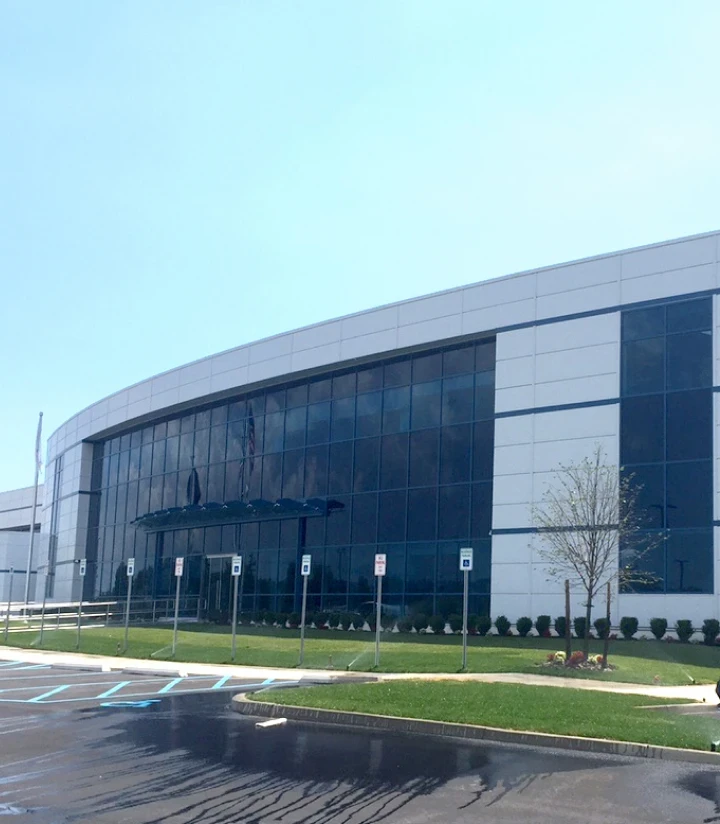
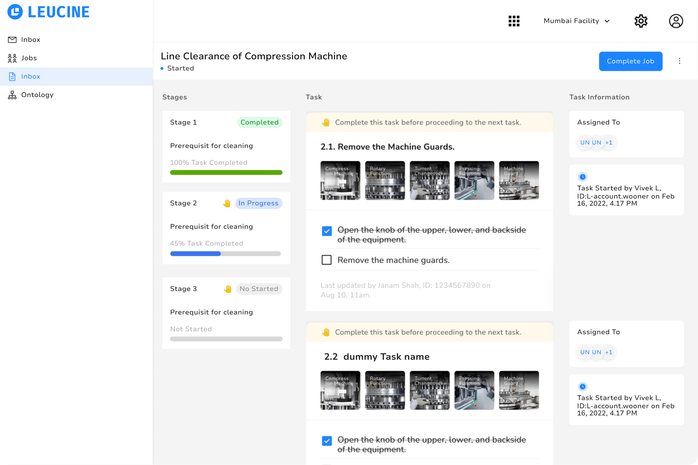
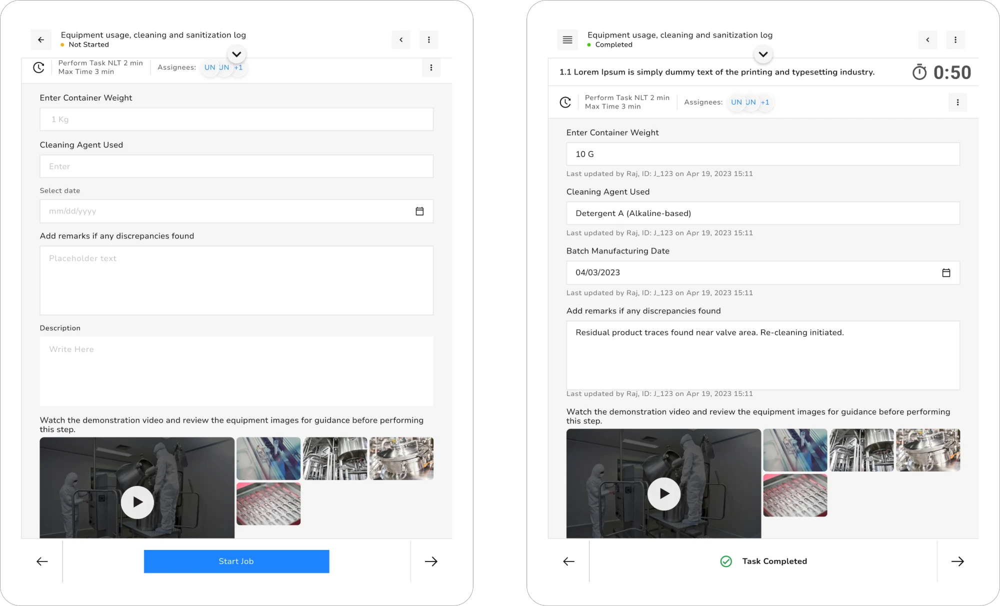

About 3 min read
Leucine
Redesigning compliance-critical workflows for pharmaceutical manufacturing teams moving from paper to digital.
- Role
- Product Designer
- Industry
- Pharma SaaS, Compliance
- Timeline
- 2022–2024
- Scope
- Research · Workflow Design · Design System · Usability Testing · Cross-Functional Collaboration · Developer Handoff
About the product
Leucine helps pharma manufacturers digitize regulated production — SOPs, audits, testing, approvals. The product was live and growing when I joined, but the design hadn’t scaled with real-world complexity. Operators were making errors, workflows had gaps, and a missed step wasn’t just a UX problem. It was a compliance risk.
The environment I was designing for
Regulatory complexity
Strict SOPs, no room for ambiguity.
High cognitive load
Accuracy, documentation, and approval, all at once.
Limited research access
Direct end-user research was restricted; insight came from onsite visits and customer success data.
Real-world conditions
Tablets, gloves, shop floor — desktop-first design was causing execution errors.
What research revealed
Support tickets couldn’t tell me this. Onsite visits could.

Missing context caused mid-task stops
Exceptions weren’t accounted for anywhere in the system
Tablets were the real device. The UI still wasn’t.
The decisions
Structure execution around hierarchy, not a flat list
SOPs have stages, tasks within stages, controls within tasks. The original view flattened all of it. Rebuilding the information architecture to match the real hierarchy meant operators always knew where they stood and what came next.
Bring context to the point of execution
Each task now carries what an operator needs to complete it correctly, without leaving the screen — progressive disclosure kept it clean while solving the single biggest cause of mid-task interruptions.
Design for exceptions, not just the ideal path
Real manufacturing rarely goes to plan. We added conditional branching, scheduled/recurring automation, and repeatable flows for high-frequency tasks — less manual work, more accurate audit trails.
Design for the tablet, not just make it responsive
Solo effort, start to finish: research, onsite observation, redesign. Standing, gloved, time-pressured use on a shop floor needed rethinking, not resizing. Fixed a recurring source of bugs and freed engineering from constant responsiveness fixes.
The work
SOP Execution
Redesigned around one goal: an operator always knows what’s next, and feels confident doing it. Job/equipment context up top, visible stage status, conditional branching, and a personal inbox that replaced a disconnected email-and-list system.

Tablet-Friendly Execution
Redesigned for how operators actually use the product: standing, gloved, on the shop floor, under time pressure. Not a responsive tweak, a rethink of layout, touch targets, and information density for tablet-first use.

Design System
As Leucine grew from two products to a full suite, inconsistency was slowing every handoff. Audited, filled the gaps, consolidated into one system — and introduced a structured Figma-to-ClickUp workflow the team didn’t have before.
The impact
-
About 40%
client acquisition growth within ~6 months
-
Fewer
recurring SOP errors and tablet responsiveness bugs
-
More
adoption across new plants and geographies (India, US, Europe)
Better audit readiness
Clearer reasoning captured during execution reduced compliance risk and follow-up effort.
Design collaboration that scaled
A unified system and structured process reduced miscommunication as the team grew.
What I took away
Leucine taught me what research actually costs when you skip it. In a domain this regulated, a missing status indicator can fail an audit — every decision had to be justified, and that discipline made me more deliberate. It was also my deepest exposure to cross-functional work: PMs for priorities, engineers for what’s feasible under compliance, QA for edge cases, customer success for what users were actually hitting. Synthesizing across all of those lenses, instead of designing alone, changed how I work. And starting with zero pharma background turned out to be an advantage — it forced me to learn fast, ask better questions, and trust observation over assumption.